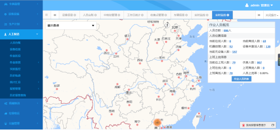
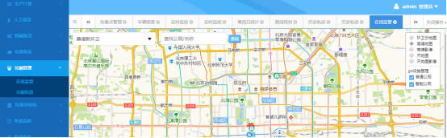
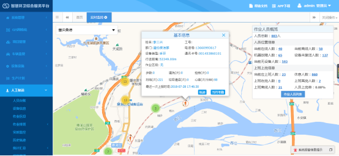

- web客户使用帮助
- 常见问题帮助
- 视频教程
常见问题帮助
1.怎样设置人员报警 2.怎样设置车辆报警？ 3.车辆报警中，平台通用报警和通用报警的区别？ 4.登录平台提示用户名或密码错误怎么办？ 5.人员怎么绑定设备？ 6.人员怎样解绑设备？ 7.怎样给人员删除排班？ 8.怎样修改人员的排班？ 9.为什么给账号分配活修改权限后，账号没有更新权限？ 10.怎样给用户分配权限？ 11.怎样给角色添加用户？ 12.怎样导入数据？ 13.怎样退出当前系统？ 14.怎样修改密码？ 15.中转站如何添加视频账号？ 16.重置密码后，初始密码是多少？ 17.怎样给人员进行排班？ 18.保洁队长或者项区域经理怎样查看项目保洁员的考勤情况？ 19.怎样查看平台中的设备？ 20.怎样操作平台中的设备，对设备进行增删改的操作？ 21.怎样查看系统中所有的车辆情况？ 22.为什么人员实时监控地图显示和作业人员概览中不一致？ 23.怎样查看人和车辆的实时报警？ 24.怎样查看人员违规的详细记录？ 25.为什么人员报警没有离线设置，但是有违规离线统计报表？ 26.作业品质与作业安全有什么区别？ 27.机械保洁和垃圾收运路线规划怎么操作？ 28.怎样查看历史轨迹？ 29.公厕在线监管怎样分类查看公厕？ 30.区域经理怎样监察整个机构的人和车的情况？
怎样设置人员报警？
1、
点击“人工保洁-报警管理-报警规则设置”
2、
点击“录入”
3、
录入报警规则，其中报警类型已经设置好，可以直接选择
4、
根据选择的报警类型，填写报警参数
5、绑定人员可以多选，绑定的人员都会按照当前设置的报警规则报警。
怎样设置车辆报警？
1、
点击“车辆监管-通用报警-报警规则设置”
2、
点击“录入”
3、录入报警规则，其中报警类型已经设置好，可以直接选择
4、根据选择的报警类型，填写报警参数（如果报警类型选择禁入、禁出，那么要体现设置好禁入禁出区域）
车辆报警中，平台通用报警和通用报警的区别？
通用报警：报警规则所有车辆通用，录入报警规则选择车辆时，可以多选，选择的车辆都会绑定这条报警规则，收到这条报警规则的约束，违规会产生相应的报警。
平台通用报警：设置报警规则和通用报警方式一致，但是在录入报警时，不会选择车辆进行绑定报警，而是选择车辆类型，一旦选择了某一种车辆类型，那么平台中所有该类型的车都会绑定这套报警。
登录平台提示用户名或密码错误怎么办？
1、
首页要先确认是否是自己输入有误
2、
联系项目公司管理人员或者有管理员权限账号的人员
3、
查看系统中是否存在账号
4、
如果系统中有账号，那么对账号进行重置密码操作
5、
重置密码后，默认密码为88888888
人员怎么绑定设备？
人员绑定设备分为两种情况：
(1)
新录入人员和设备进行绑定
1、
点击“设备设施-人员设备”
2、
录入设备信息
3、
点击“人工保洁-人员台账”
4、
录入人员信息
5、
在录入人员信息页面，点击选择设备
7、
人员录入完成同时绑定设备完成
(2)
给已有人员绑定设备
1、
点击“人工保洁-人员台账”
2、
选择要绑定设备的人员，点击“编辑”
3、
在编辑页面点击“选择设备”
4、
选择设备后点击“确定”
5、
设备绑定完成
人员怎样解绑设备？
人员绑定设备后，可以进行解绑的操作。
(1)
人员没有排班
人员绑定设备但是没有排班的时候，直接点击“人工保洁-人员台账”中的“解绑”按钮，即可进行解绑设备
(2)
人员有排班
如果人员有排班，解绑设备时，会提示人员已有排班不能解绑。
1、
“作业排班-排班方式”删除要解绑人员的排班方式
2、
“作业排班-排班记录”删除要解绑人员今天及今天之后的排班记录
3、
在“人工保洁-人员台账”中点击解绑
怎样给人员删除排班？
保洁员可能会因为一些情况，需要对排班进行删除，
1、
删除排班首先要在“人工保洁-作业排班-排班方式”中删除排班方式，
2、
在“人工保洁-作业排班-排班记录”中删除排班记录（删除今天及今天之后的排班记录）
排班方式和排班记录都删除后，人员的排班则被删除，不会在对该人员进行考勤。
怎样修改人员的排班？
如果人员的排班有变动，那么可以对排班进行修改。
1、
修改作业区段，在“人工保洁-作业区段”模块修改对应的作业区段
2、
修改班次，在“人工保洁-作业排班-班次设置”中修对应班次时间
3、
修改排班方式，在“人工保洁-作业排班-排班方式”中修改
修改排班后，排班记录中会即时改变排班记录内容，新的排班会在第二天才开始生效。
为什么给账号分配活修改权限后，账号没有更新权限？
修改权限后，账号需要退出重新登录平台，才会更新权限设置。
怎样给用户分配权限？
1、
点击“系统管理-用户管理”
2、
选择要分配权限的用户
3、
点击“用户编辑”
4、
点击“角色”，可以给用户修改角色或者增加角色
5、
分配权限后退出重新登录系统即可。
怎样给角色添加用户？
1、
点击“系统管理-角色管理”
2、
选择想要添加用户的角色，点击“用户”
3、
点击“用户录入”或者“添加已有用户”对角色添加用户

怎样导入数据？
平台中部分模块有导入数据的操作，以“人工保洁-人员台账”为例：
1、
点击“人工保洁-人员台账”
2、
点击“模板下载”
3、
下载模板后，在模板中填写相应字段内容
4、
保存模板后，点击“导入”
5、
选择保存好的填写过的模板
6、
点击“开始上传”
7、
如果输入内容有误，会给出提示，内容正确会提示上传成功
怎样退出当前系统？
点击右上角账号图标，弹出下拉框选择安全退出，就可以退出当前系统。
怎样修改密码？
点击右上角账号图标，弹出下拉框选择修改密码，可以修改当前登录用户的密码。
中转站如何添加视频账号？
1、
点击“设备设施-环卫设施-中转站管理”
2、
点击录入或者编辑
3、
在录入或者编辑页，“是否有视频”选择“是”
4、
输入中转站视频设备的链接账号和密码
5、
绑定设备后，就可以查看中转站的视频
重置密码后，初始密码是多少？
平台初始密码是111111
怎样给人员进行排班？
前提：录入作业区段、班次
1、
点击“人工保洁-作业排班-排班方式”
2、
点击“录入”
3、
填写对应的内容
例：李四排班为两天倒班，第一天正常班，第二天休息，第三天正常，第四天休息…………
排班时：周期天数选择2，班次数量选择1，天数为2的排班时候否休息选择“是”，人员选择“李四”。
保洁队长或者项区域经理怎样查看项目保洁员的考勤情况？
1、
点击“人工保洁--统计汇总”
这里的报表可以查看当前机构下人员的考勤情况，上岗情况。
迟到：打卡时间晚于开始时间（上报位置进入工作区段的时间，晚于要求打卡时间）
早退：最后一次打卡时间早于结束时间（也就是上报的位置在工作区段以外）
缺勤：没有打卡时间，或者没有进入排班区域
漏打卡：只有一个打卡时间（手环没电离线）
无任务：没有工作区段，没有排班
怎样查看平台中的设备？
点击“设备设施”模块

平台中所有的设备都在“设备设施”模块中维护。
怎样操作平台中的设备，对设备进行增删改的操作？
点击“设备设施”模块
在“设备设施”模块，可以对设备进行增删改查的操作，平台所有设备都在“设备设施”模块维护，其他模块只可能查看设备，不能进行操作。
怎样查看系统中所有的车辆情况？
点击“车辆监管”
“车辆监管”模块，可以看到平台中所有车辆的实时情况、车辆信息、保险、报警、轨迹等数据。
为什么人员实时监控地图显示的人数和作业人员概览中不一致？

点击“人工保洁-实时监控”，作业人员概览中，人员数量和地图联动，点击人员总数，地图上显示所有上报过位置的人，人员总数中包含“设备未激活”“无设备人数”，没有上报过数据的人无法再地图查看，所有会造成差异。
怎样查看人和车辆的实时报警？
首先要设置好任何车的报警规则
1、
进入人或车的实时监控页面
2、
点击“系统报警信息提示”，可以查看到实时报警，显示最近10分钟的报警数据
怎样查看人员违规的详细记录？
点击“人工保洁-报警管理”，查看违规统计报表，可以查看人员违规的详细时间。
为什么人员报警没有离线设置，但是有违规离线统计报表？
目前平台人员报警规则只有“超时滞留”和“越界报警”，平台判断设备超过30分钟更没有上报数据为离线，所以没有离线的报警规则设置。
作业品质和作业安全有什么区别？
作业品质和作业安全在流程和操作上都一直，只是巡检的内容不一致。作业品质要求巡检员监察作业区段的品质情况，作业安全则是要求巡检员监察作业区段内的安全情况。
机械保洁和垃圾收运路线规划怎么操作？
1、
点击“机械保洁-路线规划-录入”
2、
在地图中点击起点和中间，在生成的路线中，拖拽中间点，可以拖拽路线，点击地图其他地方，可以修改终点位置
修改道路宽度，可以计算出作业面积
3、
点击生成路线，弹出新增路线的页面，信息填写完成，则路线规划成功，路线可以在排班中使用
怎样查看历史轨迹？
平台可以查看人员和车辆的历史轨迹，点击历史轨迹菜单，以人为例
点击人员姓名，在弹出的人员列表中选择人员，选择日期，点击查询，可以查看某个人或车某一天的轨迹情况。
公厕在线监管怎样分类查看公厕？
点击“公厕管理-在线监管”
1、点击右上角图标，可以选择查看只能公厕或普通公厕

区域经理怎样监察整个机构的人和车的情况？
区域经理想要监察机构的人和车的情况，需要查看人工保洁、车辆监管、机械保洁、垃圾收运模块的实时监控，实时监控中，可以看到人和车的当前位置，当前状态和详细信息。
